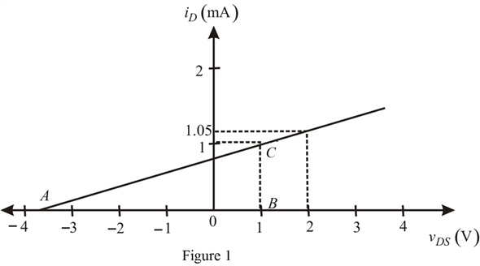

The change in drain-to-source voltage is,
The change in drain current is,
Determine the value of the resistance,  .
.
Thus, the value of the resistance,  is .
is .
The change in drain-to-source voltage is,
The change in drain current is,
Determine the value of the resistance, .
Thus, the value of the resistance, is .
Draw versus  characteristics.
characteristics.

Consider the triangle ABC in Figure 1.
Thus, the voltage is .
Determine the value of  .
.
Thus, the value of  is .
is .